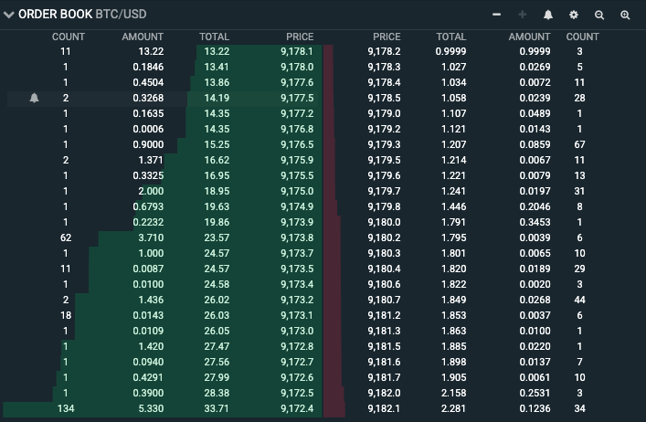

Chapter
Contents
8.1. Chapter¶
8.1.1. Overview¶
Decentralized Finance (DeFi) leverages decentralized blockchain technology in-order to offer financial products and services without middlemen. Traditionally financial products have relied heavily on banks, governments etc… DeFi’s fundamental goal is to offer financial products without relying on other parties. There are numerous problems with traditional finance:
Centralized control: currently only a handful of banks retain control over rates and fees. Additionally governments play a critical role in financial policies, interest rates etc…
Limited access: In the world currently 1.7 billion people are unbanked which means they do not have access to loans and to engage in many of the financial transactions we take for granted.
Inefficiency: There are many intermediaries that exist in the current financial system. For example when businesses make transactions often a transaction fee is taken out of the profits. There are many other insufficiencies in financial institutions such as transferring money, selling stocks, broker fees etc…
Lack of interoperability: Customers, and businesses have to deal with transactions all the time and many times these systems are separated and are poorly connected and make transferring money very difficult.
Opacity: Banks rely on the government for protection because there are many things that are hard for the government to predict. Furthermore, even from a customer’s viewpoint it is very hard to determine whether or not the rate that banks are providing are competitive or not.
Traditionally there are six main DeFi categories which are the following:
Stablecoins: see previous chapter.
Exchanges: these allow users to trade assets for another (for example USDT → ETH, ETH → BTC). Decentralized Exchanges (DEX) allow for direct peer to peer transactions without relying on centralized parties that will hold the asset in the process of exchanging one asset for another.
Lending/Borrowing: this is one of the most common uses of DeFi as it allows users to borrow, lend, and stake assets. This allows users to borrow without going through the traditional hassle banks have provided and allows lenders to earn interest.
Synthetic assets: traditional finance has allows for investments in future and options. Synthetic assets allow for investments in these traditional assets through blockchain based tokensized assets. The easiest way to understand each one areas in DeFi is to look at the most popular projects in each of these fields.
8.1.2. Exchanges¶
Firstly we will look at how exchanges work in traditional finance. Some popular exchanged that are centralized include:
New York Stock Exchange (NYSE)
Nasdaq
Coinbase
Binance
Gemini
Centralized exchanges allow for the buying and selling of cryptocurrencies via either other cryptocurrencies (ETH, BTC) or they allow you to use fiat currencies (via bank accounts) to buy tokens. Centralized exchanges most times control all aspects of buying or trading tokens from the security, pricing of assets, to the custodial of the tokens. These centralised exchanges (CEX’s) many times are responsible for following regulations which require users to complete Know your Customer (KYC), Anti-Money Laundering (AML) and Counter Terroritsm Financing Checks. According to Gemini as of September 2020, 95% of all digital as CEX’s work on an order book model. An order book is a huge list of prices that buyers and sellers are asking for.
However, as a trader you would want to be able to sell your crypto without waiting for the exchange to pair you up with someone. Liquidity is the availability of an asset, and the ease in which one asset can be traded for another. The higher the liquidity the better the prices for the customers.
Fundamental Problem: All centralized exchanges require a third party that is responsible for matching order which can lead to fees, latency problems, and sometimes lack of liquidity.
8.1.2.1. Uniswap:¶
Uniswap was one of the pioneering projects in the DeFi space that gathered traction, and is one of the most widely used DEX’s. It was launched in 2018 on Ethereum and in April of 2021 it had processed over $10 billion in trading volume.
Unlike traditional DEX’s and CEX’s whose job it is to match buyers and sellers, Uniswap uses a Constant Product Market Maker Model. Uniswap is an automated market maker. As mentioned above the fundamental problem with DEX’s is the problem of liquidity. Uniswap has solved this problem by using an automated liquidity protocol. Much like traditional exchanges where there are different pairs (USD → CAD, CAD → USD). Uniswap has different pools which is made up of a reserve of two ERC-20 tokens.
The key part of these pools is that they rely on liquidity providers (LP) who deposit an equal value of the underlying of both tokens. Let’s suppose the pool currently has \(100,000 and you contributed \)10,000, for providing this liquidity you would be rewarded a LP token. Since you provided 10% of the liquidity in the pool you would receive 10% of the LP tokens for that pool and these tokens can be redeemed for a fraction of the trading fees. When you want to exit you receive your portion of the fees as well as their tokens back.
Now that we have understood the liquidity aspect of Uniswap, we will now look into how exactly the prices of tokens are determined. Since Uniswap does not use an order-book model and uses an automated market maker system we have to find out how to fairly price the assets.
Note
The key equation is the constant product formula: x*y = k.
x = the total value of token 1
y = the total value of token 2
k = a constant value of the product of x and y
The fundamental goal of Uniswap is to keep the pool of token 1 and token 2 constant at k.
Let’s suppose we have a pool of BTC and ETH. As of January 10th 2022 the number of BTC tokens was 3.61k and the number of ETH was 52.94k ETH. This means that 1 BTC is equal to approximately 13.29 ETH which was equal to approximately 42k which was very close to that of BTC at the time. Let’s say I buy 1 BTC for the current price of ETH. This means that the total amount of BTC goes down and the total amount of ETH goes up, and because of this the price of BTC will go up because of the ratio.
But what if the price of BTC on Uniswap is higher than that occurring on other exchanges (after all it is solely relying on this simple equation). It would be in your interest to buy BTC on another exchange and sell it on Uniswap. If the price of BTC was lower than that on other exchanges you would buy on Uniswap and sell it elsewhere – this idea is known as abtrigage. Uniswap relies heavily on arbitrage traders to ensure that the pools are equally balanced to reflect the price of the tokens as compared to other exchanges.